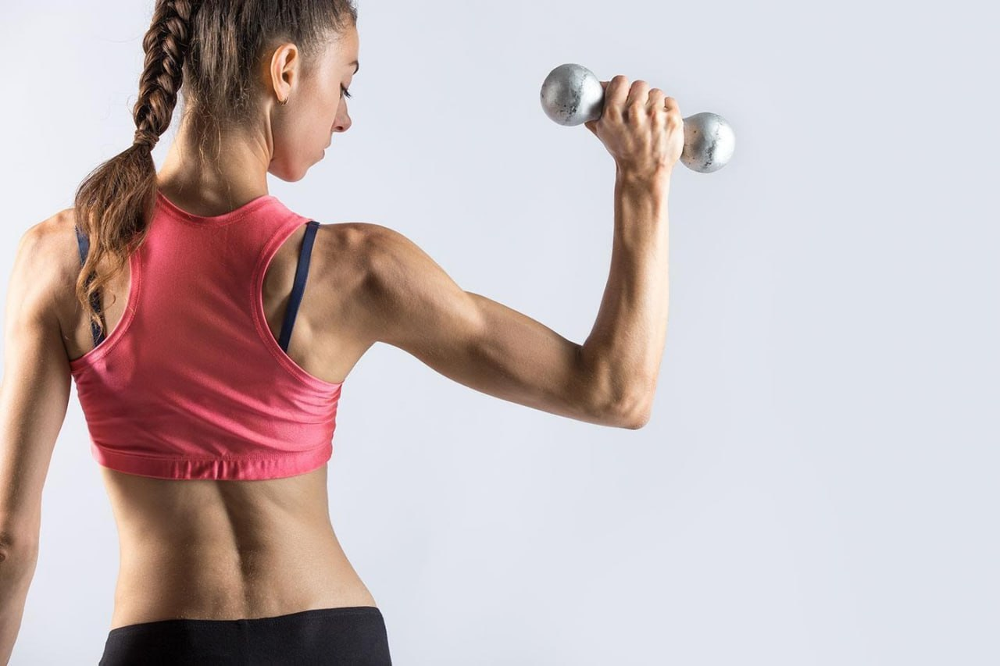

Фітнес: Як підтримати фізичне здоровʼя у будь-якому віці
У світі, де активний спосіб життя стає необхідністю, питання фітнесу стає
актуальним на будь-якому етапі життя. Від дитинства до літнього віку фітнес
може бути ключем до відмінного фізичного та психічного здоров'я. Давайте
розглянемо, як зберігати і підтримувати фізичне благополуччя у будь-якому віці.

Дитинство та Підлітковий Вік: Започаткування Здорового Способу Життя:
Вивчення важливості фізичної активності для дітей та підлітків. Ігри, спортивні
заходи та різноманітні види активностей сприяють розвитку моторики та
формуванню звички до здорового способу життя.
Молодь та Дорослий Вік: Збереження Форми та Здоров'я:
Розгляд ролі фітнесу в житті молоді та дорослих. Отримання задоволення від
тренувань, підтримання фізичної форми та попередження хвороб — основні
моменти.
Середній Вік: Адаптація та Підтримка Здоров'я:
Визначення особливостей фітнесу для людей середнього віку. Адаптація
тренувань, які підтримують м'язову масу, зберігають гнучкість та підтримують
серцево-судинну систему.
Літній Вік: Фітнес для Збереження Молодості та Здоров'я:
Вивчення значущості фізичної активності для людей похилого віку. Прості
вправи, які поліпшують баланс, зберігають мобільність та сприяють здоров'ю
кісток.
Адаптивний Фітнес для Осіб із Обмеженими Можливостями:
Обговорення можливостей фітнесу для осіб із різними обмеженими
можливостями. Тренування, які адаптовані до потреб та можливостей кожного.
Фітнес — це не просто тренування, але і ключ до збереження та підтримки
здоров'я на всі віки. Незалежно від віку, фізична активність важлива для
зміцнення організму та забезпечення повноцінного життя. Спробуйте зробити
фітнес частиною свого щоденного розкладу — ваше тіло та душа подякують
вам за це.
Хвастик Тетяна